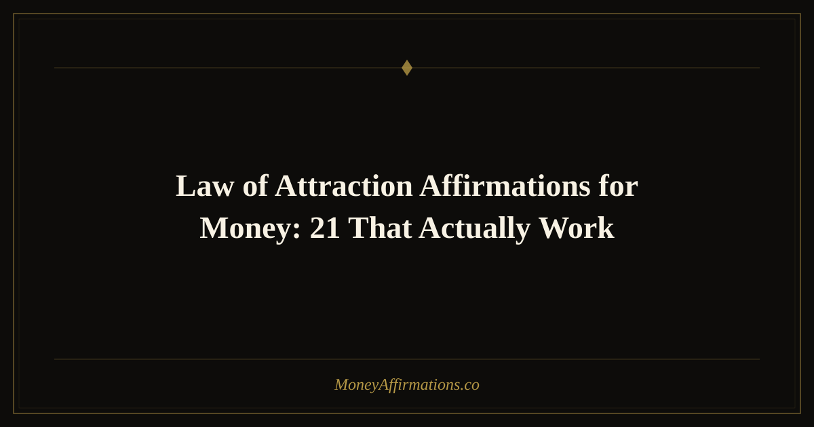

Law of Attraction Affirmations for Money: 21 That Actually Work

The law of attraction operates on a deceptively simple premise: like attracts like. The thoughts, feelings, and beliefs you hold with the most consistency and conviction act as a signal, drawing experiences into your life that match their frequency. When that dominant signal is one of lack, worry, and financial fear, the results tend to confirm those feelings. When that signal shifts to one of abundance, alignment, and magnetic expectation, something remarkable begins to happen.
These 21 law of attraction affirmations for money are carefully crafted to align your inner frequency with wealth. They use the specific language of vibration, alignment, the universe, and manifestation — because that language is not just poetic. It is functional. It trains your mind to think in terms of flow and reception rather than strain and scarcity, and that shift changes everything.
What are law of attraction affirmations for money?
Law of attraction money affirmations are statements that address both what you want and the energetic state required to receive it. Where a standard affirmation might say "I have plenty of money," a law of attraction affirmation goes deeper: "My vibration is aligned with financial abundance and the universe delivers it to me now." The addition of vibrational and universal language activates a felt sense of connection to something larger than your current circumstances.
This matters because the law of attraction works through feeling as much as thought. When an affirmation produces a genuine emotional resonance — that feeling of "yes, this is true, this is possible, this is already on its way" — it becomes exponentially more powerful. The 21 phrases below are designed to create exactly that resonance, even if your current financial reality does not yet reflect them.
21 law of attraction affirmations for money
- My vibration is perfectly aligned with financial abundance and wealth flows to me now.
- I am in harmony with the frequency of money and I attract it effortlessly.
- The universe always delivers abundance to me in perfect timing and perfect measure.
- I am a vibrational match for wealth and prosperity in every area of my life.
- I manifest money quickly because my energy is clear, open, and fully receptive.
- The universe conspires to bring financial abundance into my life every single day.
- I align my thoughts, feelings, and actions with the wealth I am ready to receive.
- I attract financial opportunities because my frequency is set to abundance.
- Every positive thought I think about money brings more of it into my reality.
- I am in perfect alignment with the flow of universal prosperity.
- The universe supports my financial goals and opens doors I have not even imagined yet.
- I manifest wealth with ease because I am fully aligned with my highest financial vision.
- My thoughts are powerful creators and I think wealthy thoughts consistently.
- I attract large amounts of money because I vibrate at the frequency of abundance.
- The universe is infinitely abundant and I claim my full share of that abundance now.
- I trust the manifestation process and I allow money to flow to me without resistance.
- Every time I align with gratitude, the universe amplifies my financial blessings.
- I am connected to the unlimited source of all abundance and wealth comes to me easily.
- My financial goals are already manifested in the universe and I receive them with joy.
- I radiate the energy of prosperity and the universe reflects it back to me in abundance.
- I am a powerful manifestor of wealth and my financial reality improves every day.
How to use these affirmations
Law of attraction affirmations work best when you activate not just the words but the feeling state behind them. Before you begin your practice, spend thirty seconds imagining that your biggest financial goal has already been achieved. Feel the relief, the joy, the freedom. Step into that emotional state fully, even briefly. Then speak your affirmations from inside that feeling rather than reaching toward it from a place of lack.
Choose five of the affirmations above and practice them daily for at least twenty-one days — the commonly cited minimum time for a new neural habit to form. Say them in the morning to set your vibrational tone, and again in the evening to close the day in alignment. Evening practice is especially useful because the subconscious mind processes during sleep, meaning the last thoughts you hold before sleeping have an outsized influence on your baseline beliefs.
Write your chosen affirmations in a dedicated manifestation journal. After writing each one, add a sentence about why you believe it is true or already happening — "I attract financial opportunities because I noticed today that..." This bridges the affirmation to real evidence, which rapidly accelerates belief.
Tips to make them work faster
- Raise your vibration first. Do something that genuinely makes you feel good — listen to music you love, move your body, spend five minutes in nature — before your affirmation practice. Affirmations land deeper when you are already in a positive emotional state.
- Use the present tense with conviction. Saying "I am attracting money now" is more powerful than "I will attract money." Present tense tells your subconscious the reality already exists.
- Create a vision board companion. Pair each affirmation session with a brief look at images representing your financial goals. Visual and verbal reinforcement together create stronger neural encoding.
- Release attachment to the how. The law of attraction works most freely when you state what you want and trust the process, rather than obsessing over a single path to receiving it. Openness to unexpected channels is key.
- Celebrate synchronicities. When surprising financial events occur — however small — recognize them as evidence that your alignment is working. Acknowledgment reinforces the cycle.
Frequently Asked Questions
Do I need to believe in the law of attraction for these affirmations to work?
Not entirely. Even from a purely psychological perspective, these affirmations work by reshaping your self-concept, reducing anxiety, and increasing your openness to opportunities. You do not need metaphysical certainty — you just need consistent practice and a willingness to act on the inspiration and ideas that arise. Many people begin skeptically and find that results shift their belief over time rather than the other way around.
Why does my financial situation sometimes get worse when I start affirming abundance?
This phenomenon, sometimes called "contrast," is common at the start of any mindset shift. The gap between your new affirmations and your current reality becomes more visible before it begins to close. Psychologically, you are becoming more aware of the patterns you want to change. Stay consistent with your practice — this phase typically passes within two to four weeks as new beliefs begin to take hold and guide your behavior in new directions.
How specific should my financial affirmations be?
A mix of specific and general works best. General affirmations like "wealth flows to me from all directions" keep you open to unexpected sources. Specific ones like "I easily attract an extra $2,000 this month" create a focused target for your subconscious. Use general affirmations for daily practice and specific ones when you have a clear, concrete financial goal you are actively working toward — and always pair both types with aligned action.
Deepen your practice with the full manifestation affirmations collection, where you will find powerful statements organized around every aspect of the attraction and manifestation process.